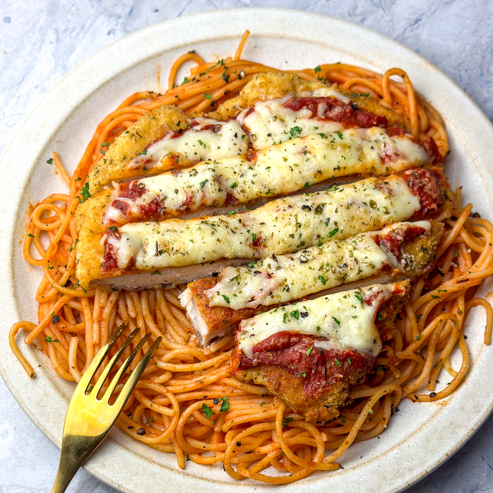

Chicken Parmesen

Description:
Indulge in the comforting embrace of our classic
Chicken Parmesan recipe. Tender, juicy chicken cutlets,
coated in seasoned breadcrumbs and pan-fried to golden
perfection, are nestled under a blanket of rich marinara
sauce and melted mozzarella cheese.
Each bite offers a
symphony of textures and flavors -- the crispy chicken, the
tangy tomato sauce, and the gooey, satisfying pull of cheese.
This hearty and flavorful dish is perfect for a weeknight family
dinner or a special occasion, bringing a little slice of Italian-American
tradition right to your table. Serve it over your favorite
pasta for a complete and utterly delicious meal. Buon appetito!
Yields: 4 servings
Prep time: Approximately 20 minutes
Cook time: Approximately 30-35
Ingridients:
For the Chicken:
- 4 boneless, skinless chicken breasts (about 1 ½ - 2 lbs total)
- 1/2 cup all-purpose flour
- 1 teaspoon salt
- 1/2 teaspoon black pepper
- 2 large eggs
- 1 cup Italian seasoned breadcrumbs
- 1/2 ccup grated Parmesan cheese
- 1/4 cup olive oil, for cooking
For the Sauce:
- 1 tablespoon olive oil
- 1 small yellow onion, finely chopped
- 2 cloves garlic, minced
- 28 oz. canned crushed tomatoes
- 1 teaspoon dried oregano
- 1/2 teaspoon dried basil
- Pinch of red pepper flakes (optional)
- Salt and pepper to taste
For the Topping
- 8 oz. mozzarella cheese, shredded
- 1/4 cup grated parmesan cheese
- 2 tablespoons fresh basil leaves, chopped (for garnish)
Base
- 1 pound pasta (spaghetti, linguine, or your favorite)
Instructions:
Preparing the Chicken
- Place each chicken breast between two pieces of
plastic wrap or in a resealable plastic bag.
Using a meat mallet or the flat side of a heavy skillet,
pound the chicken to an even thickness of about ½ inch.
This helps them cook evenly and quickly.
- In a shallow dish, combine the flour, salt, and pepper.
- In another shallow dish, whisk the eggs.
- In a third shallow dish, mix together the Italian seasoned breadcrumbs and the 1/2 cup
of grated Parmesan cheese.
- Dredge each chicken cutlet in the flour mixture, making sure to coat both sides.
Shake off any excess flour.
- Dip the floured chicken into the whisked eggs, again coating both sides. Allow
any excess egg to drip off.
- Finally, press each egg-coated chicken cutlet firmly into the breadcrumb mixture,
ensuring both sides are evenly coated.
Making the Marinara Sauce
- Heat 1 tablespoon of olive oil in a saucepan over medium heat.
- Add the chopped onion and cook until softened and translucent, about 5-7 minutes.
- Stir in the minced garlic and cook for another minute until fragrant, being careful not to burn it.
- Pour in the can of crushed tomatoes. Add the dried oregano, dried basil, and red pepper flakes (if using).
- Season with salt and pepper to taste.
- Bring the sauce to a simmer, then reduce the heat to low, cover, and let it cook gently for at least 15 minutes, stirring occasionally, to allow the flavors to meld.
Cooking the Chicken
- Heat ¼ cup of olive oil in a large skillet over medium-high heat. The oil should shimmer but not smoke.
- Carefully place the breaded chicken cutlets in the hot skillet, being careful not to overcrowd the pan. You may need to cook them in batches.
- Cook for about 3-4 minutes per side, or until golden brown and cooked through. The internal temperature of the chicken should reach 165°F (74°C).
- Remove the cooked chicken from the skillet and place it on a paper towel-lined plate to drain any excess oil.
Assembling and Baking the Chicken Parmesean
- Preheat your oven to 375 degrees farrenheidt (190 degrees celsius)
- Spread a thin layer of the marinara sauce in the bottom of a baking dish (large enough to hold all the chicken).
- Place the cooked chicken cutlets in a single layer over the sauce.
- Spoon a generous amount of the remaining marinara sauce over each chicken cutlet.
- Top each cutlet with shredded or sliced mozzarella cheese and sprinkle with the remaining ¼ cup of grated Parmesan cheese.
- Bake in the preheated oven for 15-20 minutes, or until the cheese is melted, bubbly, and lightly golden brown.
Serve
- Garnish the Chicken Parmesan with fresh chopped basil leaves.
- Serve hot over your favorite cooked pasta, or alongside a fresh salad or crusty bread.